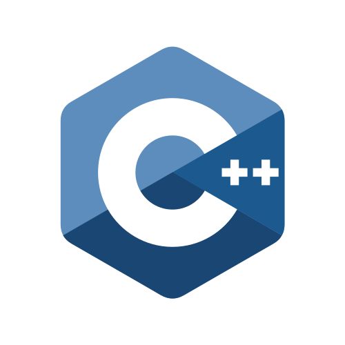
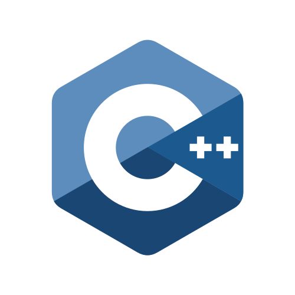
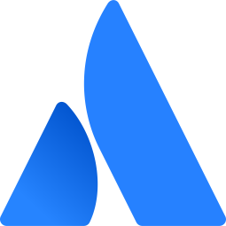
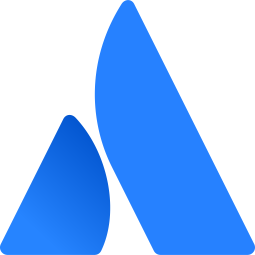
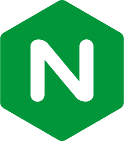
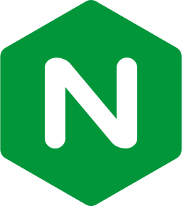
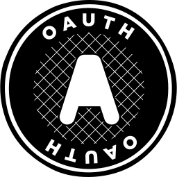
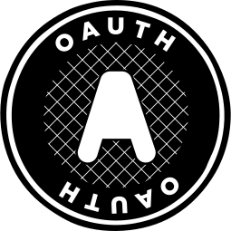

Hello, I'm a Developer._ an Engineer._ a Scientist._ an Innovator.
From 1999 to 2010, I was focused on becoming an architect. I wanted nothing more than to design, build and perfect homes.
This all changed when I took Computer Science in High School. With a very determined teacher, I started to believe.
Mr. Nivens, if you are reading this, thank you so much.
This all changed when I took Computer Science in High School. With a very determined teacher, I started to believe.
Mr. Nivens, if you are reading this, thank you so much.
I made my first achievement in Computer Science the year I graduated! I achieved a '5' score on my AP Exam for Computer Science.
I was now completely transfixed on my new path in life! And I just had to know more.
I was now completely transfixed on my new path in life! And I just had to know more.
With the help of encouraging parents, I took a few years to hone my new talent.
During this time, I started a company, collaborated on websites and managed server clusters.
And of course, raised my puppy-at-the-time Malamute: Noah!
During this time, I started a company, collaborated on websites and managed server clusters.
And of course, raised my puppy-at-the-time Malamute: Noah!
After spending a few years perfecting knowledge and gaining incredible work experience, I decided I didn't want to go it alone anymore! I acquired an achievement: intern at Velocitor Solutions!
By this time, I was wearing many hats! Quite a few hats in fact!
By this time, I was wearing many hats! Quite a few hats in fact!


 



Click on any logo above to see associated projects
Later that year, I started school at the University of North Carolina at Charlotte!
Go Niners!
Go Niners!
My time at University was spent pursuing my latest favorite discipline: Data Science!
After my first year, I started working as a Teacher's Assistant under Dr. Celine Latulippe. Under her guidance, I worked with students from Virgina Tech to enhance WebCat's CodeWorkout!.
Into my last year at UNCC whilst finishing my math minor, I became a preceptor for Dr. Celine and also began cooking up my own research project under the guidance of Dr. Mohsen Dorodchi - Bus.net!
After my first year, I started working as a Teacher's Assistant under Dr. Celine Latulippe. Under her guidance, I worked with students from Virgina Tech to enhance WebCat's CodeWorkout!.
Into my last year at UNCC whilst finishing my math minor, I became a preceptor for Dr. Celine and also began cooking up my own research project under the guidance of Dr. Mohsen Dorodchi - Bus.net!
After graduating, I moved into the private sector, landing my first position at Duke Energy as a contractor.
On the side, I continued getting more involved with several technologies.
On the side, I continued getting more involved with several technologies.
 



 

 



Click on any logo above to see associated projects
Quite a few!
As the pandemic rolled through the world, and since writing this, still affects our planet today, my focuses aligned with using my Data Science and Software Engineering background to make the world a cleaner place.
A year into my contract, I was brought on full-time to Duke Energy as a senior full-stack developer! Today, I specialize in both cloud (AWS, Azure, OnPrem) and Backend with development experience in Artificial Intelligence and Machine Learning.
You are all caught up! Head back to the top to check out some other interests of mine as well as contact information!